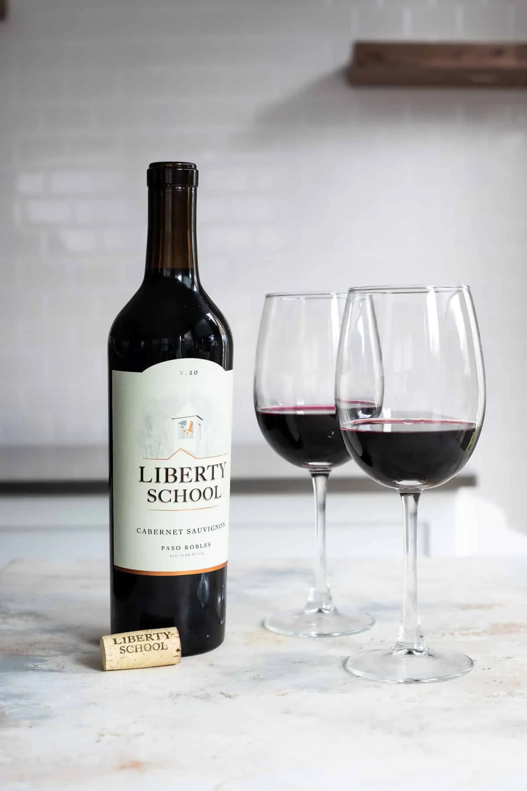
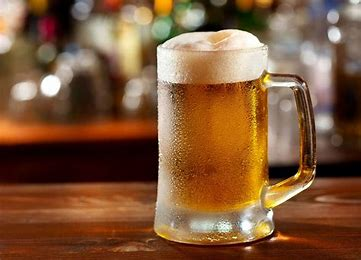
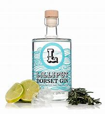
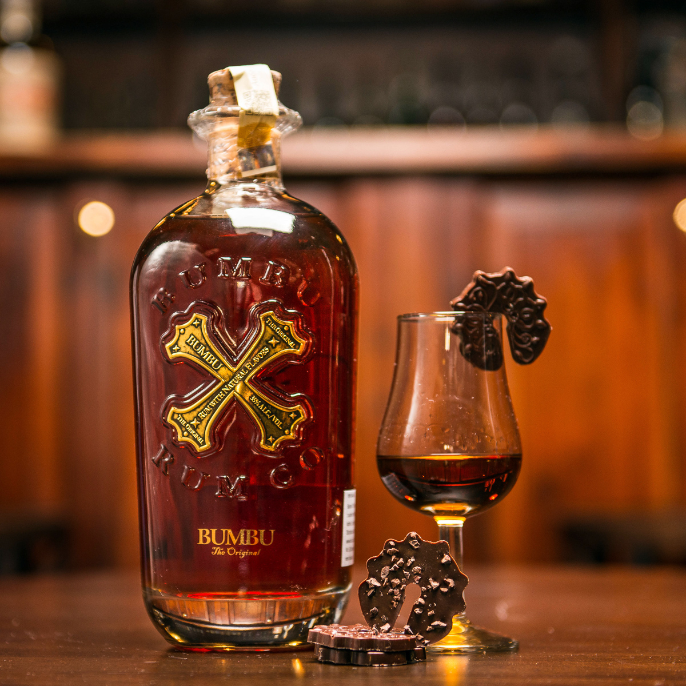
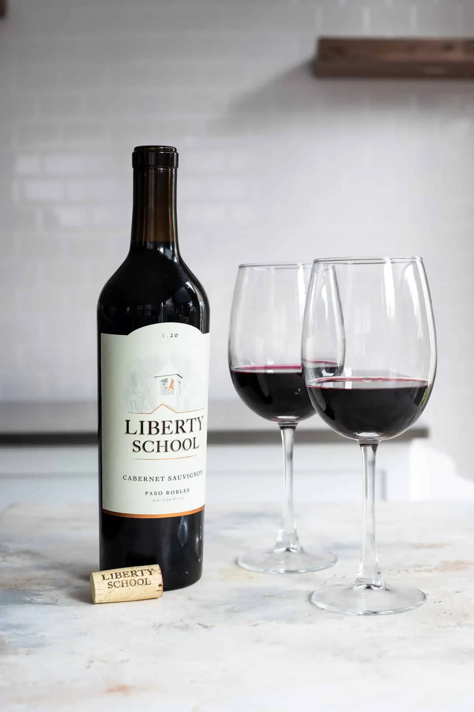
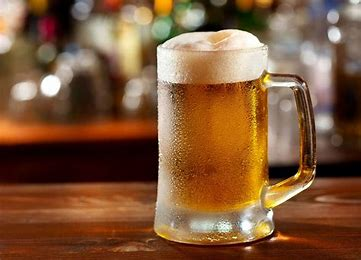
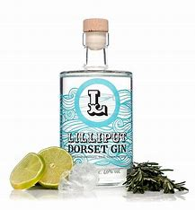
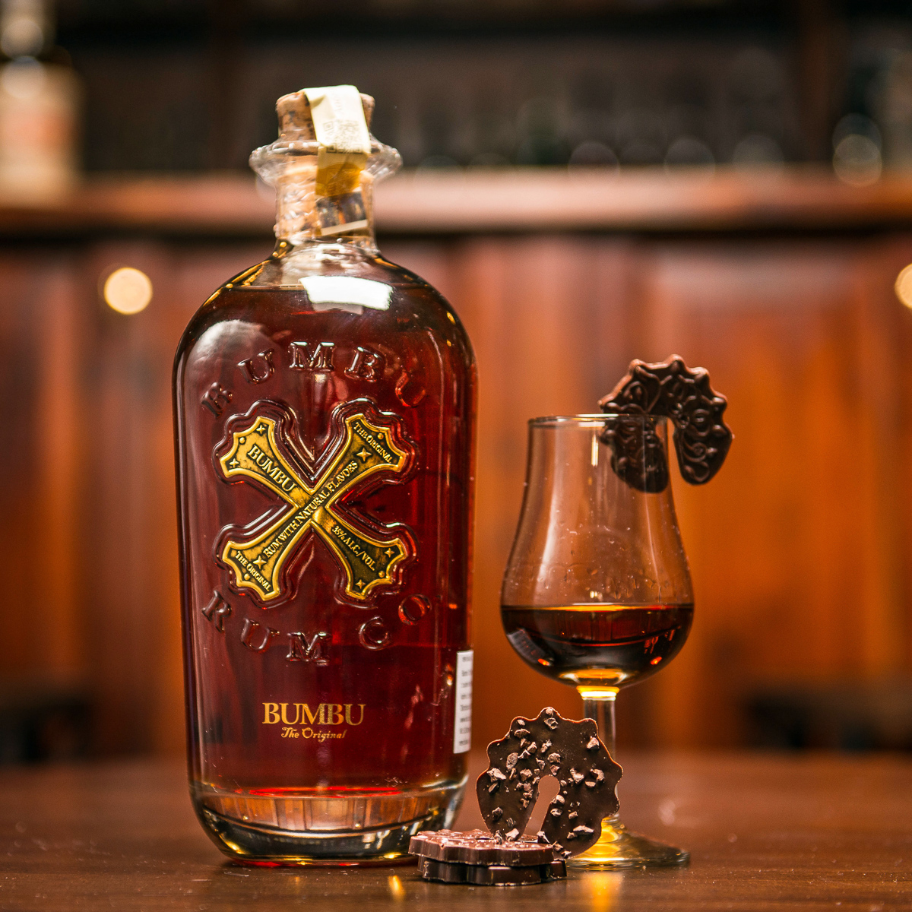

| Vein |
| Õlu |
| Liköörid |
| Kokteilid |
| Kanged joogid - džinn, viin, viski, tekiila, rumm, brändi |
-Vein-
-Õlu-
-Džinn-
-Viski-
-Rumm-
Vein on alkohoolne jook, mis on saadud puuviljade fermenteerimise teel. Euroopa Liidus on lubatud veiniks nimetada vaid viinamarjadest kääritatud jooki. Veini on valmistatud üle 8000 aasta, sellega hakati esimest korda tegelema ühes kiviaegses asulas, mis asub tänapäeva Gruusias. Maitse järgi liigitatakse veinid kuivadeks, poolkuivadeks, poolmagusateks ja magusateks veinideks. Värvi järgi jaotuvad veinid punasteks, roosadeks ja valgeteks. Liigitatakse ka marjasordi järgi, suhkrusisalduse põhjal või kasvukoha pinnase kvaliteedi alusel. Lisaks kasutatakse veini valmistamisel mitmesuguseid, tihti piirkondlikest iseärasustest tingitud spetsiifilisi tehnoloogiaid, mille tulemuseks on näiteks portveinid, vahuveinid, šerrid, burgunderid jt.
Õlu on kääritamise teel teraviljast või muust tärkliserikkast toorainest valmistatud alkohoolne jook. Õlu on kõige populaarsem ja tõenäoliselt kõige vanem alkohoolne jook, olles vee ja tee järel kõige levinum jook üldse.Arheoloogid oletavad, et õllel oli oluline roll tsivilisatsioonide kujunemises. Varaseimad märgid õlle keemilise koostise kohta pärinevad ajavahemikust 3500-3100 eKr Godin Tepe asulakohast Z̄āgrose mäestikus Lääne-Iraanis. Õlle valmistamiseks kasvatatakse viljast linnased, millest valmistatakse meski, mis segatakse veega ja filtreeritakse ning saadakse virre. Virret keedetakse tavaliselt koos humalatega, mis toimivad konservandina ning annavad õllele iseloomuliku mõrkja maitse. Seejärel virre jahutatakse ja setitatakse ning sellele lisatakse kääritamiseks pärm.
Džinn on destilleeritud alkohoolne jook, millele on iseloomulik maitsestamine kadakamarjadega. Laukapuu džinni (inglise keeles sloe gin) valmistamisel kasutatakse maitse andmiseks laukaploome. Algselt hakati džinni valmistama Hollandis. Jook oli mõeldud ravimiks, millele maitse meeldivamaks muutmiseks lisati kadakamarju. Seetõttu sai uus alkohoolne jook nime genever (tuletatud prantsuskeelsest sõnast genièvre, mis tähendab kadakamarja). Inglismaal tutvustas jooki Oranje Willelm 17. sajandil ning inglased lühendasid joogi nimetuse gin'iks. Tänapäeval valmistatakse džinni eri viisidel, väga paljudest taimedest, on loodud palju stiile ja tootemarke. Lisaks kadakamarjale annavad džinnile maitse ka maitsetaimed, ürdid, õistaimed või puuviljad ja tihtipeale nende kombinatsioonid. Džinni tarbitakse tavaliselt koos toonikuga (džinn toonikuga).
Viski on destilleeritud alkohoolne jook, mida destilleeritakse käärima lastud teraviljamassist ja küpsetatakse puitvaatides. Viski tegemiseks kasutatavad teraviljad on muu hulgas oder, rukis, nisu ja mais. Varaseimad andmed alkoholi destilleerimisest pärinevad 13. sajandist, kui alkoholi destilleeriti veinist. Alkoholi destilleerimise saladuse tõid Iirimaale mungad Lähis-Idast.Inglise keelde on sõna whisky tulnud vanakeldikeelse sõna uisce / uisge inglispärastamisest. Vanakeldi keeles tähendab uisce / uisge vett. Viskid erinevad alkoholisisalduse, tooraine ja kvaliteedi poolest.Rumm on kange, kuni 96% etanoolisisaldusega jook, mis saadakse fermenteerimise ja destilleerimise teel kas suhkruroomelassist või suhkruroomahlast ja -siirupist.
Rumm on niinimetatud Uue Maailma alkohol, sest enne Ameerika avastamist oli suhkrurooviin Euroopas tundmatu. Suhkruroost viina põletamise kunsti tunti Kesk- ja Lõuna-Ameerikas juba ammu enne seda, kui Kolumbus sinna sattus. Spetsiifilise lõhna ja maitse tõttu sobib rumm kokteilidesse ning küpsetiste ja maiustuste maitsestamiseks. Klassikaline rummiretsept on rummikompott: rummi sisse pannakse maitsestuma marju ja puuvilju. Kompotti süüakse jäätise ja vahukoorega või vahvlite kõrvale.
-Viin-
-Tekiila-
-Brändi-
-Liköörid-
-Kokteilid-
Viin ehk vodka on puhas destilleeritud kange alkohol, mida valmistatakse teraviljast või kartulist. Viina etanoolisisaldus on 35-80%. Viinatööstus on toiduainetööstuse haru, mis toodab eeskätt viina. Kodustes tingimustes valmistatud viina nimetatakse puskariks või samagonniks.
Tekiila (hisp tequila) on kange (38-50%) ja kergelt kibe alkohoolne jook, mida valmistatakse Mehhiko lääneosas asuva Tequila ümbruses. Tekiilat valmistatakse tekiila-agaavist. Linn on nime ja jook nimetuse saanud tequili suguharult, kes asustasid neid paiku enne asteekide vallutusi. Kokku valmistatakse 35 marki tekiilat, arv on täpselt teada, sest tekiila tootmine Mehhikos on range riikliku kontrolli all.
Brändi on taimse päritoluga toorainest eriliselt töödeldud ja valmistatud (destilleeritud) alkohoolne jook, mis sisaldab tavaliselt umbes 40 mahuprotsenti alkoholi. Brändit on valmistatud tõenäoliselt juba alates 12. sajandist. Brändi valmistamisel kasutatakse toorainena mitmeid puuvilju, kuid levinuimaks tooraineks on küpsed viinamarjad, vein või veinitööstuse jäägid. Valmistamisprotsessi käivitamiseks lastakse toorainel spetsiaalsetes anumates ja kontrollitud tingimustes viljades oleva loodusliku suhkru ning ensüümide toimel käärida. Brändi tuleneb inglise sõnast brandy, mis on lühend sõnast brandywine, mis on laen hollandi sõnast brandewijn 'põletatud vein'.
Liköör on alkohoolne jook, mis sisaldab rohkesti suhkrut. Liköörid jagunevad lahjadeks (kangusega alla 25–30%) ja kangeteks (kangusega üle 25–30%). Alkoholi (olenevalt likööri sordist võib selleks olla ka brändi, konjak, grappa jne) ja suhkru kõrval lisatakse likööri maitsestamiseks ka puuvilja- ja marjamahla, taimeleotisi, vürtse. Nüüdisajal valmistatakse suur osa likööre tegelikult kunstlikest essentsidest. Kodusel teel saab likööre valmistada, lastes alkoholil tõmmata suhkru ja marjade või näiteks pähklite peal. Tuntud liköörid on näiteks šartröös, amaretto, limoncello, kürassao, benediktiin; Eestis Vana Tallinn.
Kokteil on kahest või enamast koostisosast koosnev jook. Kui algselt valmistati kokteile kiirelt ja kohapeal enne tarbimist, siis tänapäeval on levinud ka varem valmistatud ja hoidistatud kokteilid, mida tarvitatakse karastusjookidena. Tavaliselt liigitatakse kokteilid eelkõige alkohoolseteks ja alkoholivabadeks. Sageli lisatakse kokteilidele jääd, et suurendada nende värskendavat mõju, muuta maitset ning neid mõnikord ka lahjendada. Alkoholivabade kokteilide põhikomponendina pruugitakse sageli piima või jäätist, samuti mitmesuguseid mahlu. Kogu maailmas korraldatakse baarmenite vahel kokteilisegamises võistlusi, kus muuhulgas võisteldakse algupärastes kokteilides.